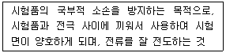

자기비파괴검사기능사 (2007-07-15 기출문제)
1과목: 자기탐상시험법
1. 후유화성 침투액(기름베이스 유화제)을 사용한 침투탐상 시험이 갖는 세척방법의 주된 장점은?
- 솔벤트 세척을 한다.
- 물 세척을 한다.
- 알칼리 세척을 한다.
- 초음파 세척을 한다.
(정답률: 77%)

2. 다음 중 직류 사용이 곤란한 자화법은?
- 극간법
- 잔류법
- 지속관통법
- 프로드법
(정답률: 18%)
3. 강자성체는 각각 작은 자기량을 갖고 있는 다수의 작은 자석으로, 자기특성을 나타내는 자석의 가장 작은 단위를 무엇이라 하는가?
- 투자율(Permeability)
- 자력선(Magnetic line)
- 자구(Magnetic domain)
- 격자구조(Lattice structures)
(정답률: 28%)
4. 자본탐상시험시 주의해야 할 사항으로 옳은 설명은?
- 비형광자분탐상시험은 어두워야 하므로 모든 빛을 차단하여야 한다.
- 자외선은 인체의 눈에 치명적 손상을 주므로 시험체를 직접 눈으로 관찰하는 것은 금지되어야 한다.
- 가연성 물질을 사용하므로 항상 추운 곳에서 검사를 실시해야 한다.
- 탐상장치의 전기회로에 대한 절연 여부를 일상 점검해야 한다.
(정답률: 알수없음)
5. 다음 중 극성이나 방향이 주기적으로 바뀌는 전류를 무엇이라 하는가?
- 직류
- 교류
- 반파전류
- 쇄도전류
(정답률: 60%)
6. 자분탐상시험에서 다음 중 의사지시모양으로 분류된 것이 아닌 것은?
- 자기펜 자국
- 단면 급변지시
- 재질 경계지시
- 화미한 자분지시
(정답률: 40%)
7. 자분탐상시험에서 대비시험편으로 사용할 수 있는 조건으로 적당하지 않은 것은?
- 검사체와 재질이 동일한 것
- 무게가 검사체와 동일한 것
- 검사체와 치수가 동일한 것
- 표면상태가 검사체와 동일한 것
(정답률: 59%)
8. 자분탐상시험시 간이형 자기 검출계(Field Indicator)를 사용하는 주 목적은 무엇인가?
- 포화 자계를 지시하는데 사용한다.
- 자계의 방향을 탐지하는데 사용한다.
- 소요 암페어를 측정하는데 사용한다.
- 잔류자기의 존재 여부를 확인하는데 사용한다.
(정답률: 62%)
9. 자성체의 자기적 성질을 표현하기 위하여 자력의 힘과 자계의 강도와의 관계를 표시한 것을 무엇이라 하는가?
- 자속밀도
- 포화곡선
- 자력선속
- 자기이력곡선
(정답률: 54%)
10. “자화장치”라 함은 검사품에 필요한 자장을 걸어 주어 자화시킬 수 있는 것을 말한다. 자화전류를 발생시키는 자화전원부의 종류가 아닌 것은?
- 전류 직통식
- 펄스 통전식
- 강압 변압기식
- 축전기 방전식
(정답률: 17%)
11. 길이 25.4cm(10인치), 직경 5.08cm(2인치)인 부품의 선형 자화시 코일의 권선수가 5회 일 때 사용되는 전류는 몇 A인가?
- 300
- 1000
- 1800
- 2700
(정답률: 56%)
12. 자분탐상시험으로 외경이 12.7cm(5인치) 이하의 시험체를 원형자화법으로 자화할 때 일반적으로 시험체의 직경 2.54cm(1인치)당 요구되는 전류(A)의 범위로 옳은 것은?
- 100 ~ 300
- 300 ~ 500
- 500 ~ 700
- 700 ~ 900
(정답률: 0%)
13. 자분탐상시험 장비 중 시험면과의 접촉부에 구리나 납 같은 물질을 접촉면으로 사용하는 이유는?
- 용융점을 높이기 위하여
- 용융점을 낮추기 위하여
- 금속을 가열하는데 도움을 주기 위하여
- 접촉면적을 늘리고 전류밀도를 높이기 위하여
(정답률: 78%)
14. 시험체에 전류를 통하면서 자분 협탁액을 적용하는 검사방법을 무엇이라 하는가?
- 연속법
- 건식법
- 잔류법
- 탈자법
(정답률: 43%)
15. 자분탐상검사 장비가 갖추어야 할 조건이 아닌 것은?
- 검사액의 산포 기능을 갖추어야 한다.
- 접촉매질 정도 및 압력표시 기능을 갖추어야 한다.
- 자외선등, 백색광 및 탈자 기능을 갖추어야 한다.
- 시험체에의 자화 기능을 갖추어야 한다.
(정답률: 63%)
16. 20[Oe]에서 자분모양이 나타나는 A형 표준시험편을 시험편에 놓고 자화전류를 서서히 증가하여 400[A]에서 자분모양이 나타났다면 자계의 강도가 40[Oe]가 되는 전류값[A]은 얼마인가?
- 200
- 400
- 600
- 800
(정답률: 77%)
17. 자분탐상시험 후 시험체의 탈자 여부를 확인하기 위하여 사용되는 기구가 아닌 것은?
- 가는 철판
- 자장 지시계
- 자기 컴파스
- 표준 시험편
(정답률: 43%)
18. 자석의 주위 공간에 자기력이 미치는 부분을 무엇이라 하는가?
- 자계
- 강자성
- 포화점
- 상자성
(정답률: 77%)
19. 자분탐상시험 장치 중 비접촉법에 의한 자화 기기는?
- 프로드법 장치
- 축통전법 장치
- 극간(yoke)법 장치
- 코일(coil)법 장치
(정답률: 50%)
20. 다음 중 와전류탐상시험으로 측정하기 어려운 것은?
- 재질 검사
- 표면직하의 결함 위치
- 피막두께 측정
- 내부 결함의 깊이와 길이
(정답률: 58%)
2과목: 자기탐상관련규격
21. 헬륨질량분석법, 압력변화시험 등을 대표적인 검사법으로 택하고 있는 비파괴검사법은?
- 침투탐상검사
- 누설검사
- 음향방출시험
- 육안검사
(정답률: 65%)
22. 검사할 시험체에서 금속학적 연속성이 파단되었음을 나타내는 용어는?
- 겹침
- 수축
- 이음매
- 불연속
(정답률: 53%)
23. 자석의 철심에 자계를 주어 발생된 자속을 시험체에 투입하는 자화방식을 무엇이라 하는가?
- 프로드법
- 통전법
- 전류관통법
- 극간법
(정답률: 31%)
24. 말굽형 영구자석을 사용하여 자분탐상검사를 할 때의 특징을 설명한 것으로 옳은 것은?
- 전원이 필요 없고, 소형이므로 취급이 용이하고 일정한 자속밀도를 유지하므로 전자석보다 검출능력이 높다.
- 시험체에 대한 자속의 유입 깊이가 교류에 비해 깊으므로 내부에 있는 결함 탐상에 가장 적합하다.
- 교류 전자석을 이용하는 자화기와 동일하게 시험면에 대한 자속밀도가 높아 표면 결함의 검출이 우수하다.
- 시험체의 두께가 두꺼울수록 시험면의 자숙밀도가 급격히 감소되어 결함의 검출능은 저하된다.
(정답률: 43%)
25. 반지름이 1m 인 원통을 1회 감은 도선에 5A의 전류가 흐른다면 원통 중심에서의 자계의 세기[A/m]는 얼마 인가?
- 0.2
- 0.4
- 2.5
- 5.0
(정답률: 23%)
26. 철강재료의 자분탐상 시험방법 및 자분모양의 분류(KS D 0213)에서 A형 표준시험편에 관한 설명 중 옳은 것은?
- 시험편은 인공흠이 없는 면을 바깥으로 붙인다.
- 시험면과 시험편의 간격은 약간 떨어지는 것이 좋다.
- 시험편의 자본의 적용은 잔류법으로 한다.
- 시험편 A1은 A2보다 높은 유효자계에서 자분모양을 얻는다.
(정답률: 24%)
27. 철강재료의 자분탐상 시험방법 및 자분모양의 분류(KS D 0213)에서 자분모양의 분류에 대한 설명 중 옳지 않은 것은?
- 자분모양의 분류는 “자분적용→전처리→자화→자분모양의 관찰”의 순서로 흠을 검출한 후에 실시한다.
- 자분모양의 분류는 시험면에 생긴 자분모양의 의사 모양이 아닌 것을 확인한 다음에 실시한다.
- 독립한 자분모양은 선상과 원형상의 2종류로 분류된다.
- 거의 동일 직선상에 연속으로 존재하고 서로의 거리가 2mm이하인 자분모양은 연속한 자분모양으로 분류된다.
(정답률: 79%)
28. 철강재료의 자분탐상 시험방법 및 자분모양의 분류(KS D 0213)에 따라 탐상결과를 수행했을 때 전처리 방법으로 적절하지 않은 것은?
- 용접부의 시험범위에서 모재 측으로 약 20mm 넓게 전처리하였다.
- 시험체가 분해될 수 있어서 모두 분해하여 전처리 하였다.
- 시험면을 잘 건조시키고 건식법으로 검사하였다.
- 시험면에 접근하기 곤란한 구멍이 있어 그대로 두고 접근 가능한 곳만 전처리하였다.
(정답률: 65%)
29. 항공우주용 자기탐상 검사방법(KS W 4041)에서 비형광 자분법을 사용시 백색등(또는 가시광)을 검사 영역에 설치하여야 한다. 적절한 검사를 수행하기 위해서는 적어도 몇 룩스 이상의 백색등이 필요한가?
- 500룩스
- 1000룩스
- 1250룩스
- 2150룩스
(정답률: 69%)
30. 철강재료의 자분탐상 시험방법 및 자분모양의 분류(KS D 0213)에 의한 일반적인 검사조건으로 볼 때, 다음 중 1회 검사에 필요한 순수한 통전시간이 가장 짧은 경우는?
- 직류를 사용한 연속법
- 교류를 사용한 연속법
- 직류를 사용한 잔류법
- 충격전류를 사용한 잔류법
(정답률: 53%)
31. 철강재료의 자분탐상 시험방법 및 자분모양의 분류(KS D 0213)에서 “A1-7/50” 표준시험편의 인공흠에는 원형(직경)과 직선형(길이)이 있다. 각각의 인공흠 크기(mm)로 옳은 것은?
- 원형(직경) = 5 직선형(길이) = 6
- 원형(직경) = 10 직선형(길이) = 6
- 원형(직경) = 10 직선형(길이) = 5
- 원형(직경) = 5 직선형(길이) = 5
(정답률: 42%)
32. 철강재료의 자분탐상 시험방법 및 자분모양의 분류(KS D 0213)에 의해 모양 및 집중성에 따라 자분모양을 분류하였을 때 다음 중 올바르게 분류된 것은?
- 균열에 의한 자분모양
- 용입부족에 의한 자분모양
- 기공에 의한 자분모양
- 개재물 혼입에 의한 자분모양
(정답률: 58%)
33. 항공우주용 자기탐상 검사방법(KS W 4041)에서 연속법으로 검사하는 경우 자화전류의 지속시간은 어느 정도로 규정하고 있는가?
- 0.5 ~ 1초
- 2 ~ 3초
- 60 ~ 90초
- 120 ~ 180초
(정답률: 22%)
34. 항공우주용 자기탐상 검사방법(KS W 4041)에서 현탁액의 오염시험은 일반적으로 최소 몇 일마다 실시하도록 규정하고 있는가?
- 120일
- 90일
- 60일
- 30일
(정답률: 53%)
35. 철강재료의 자분탐상 시험방법 및 자분모양의 분류(KS D 0213)에서 압력용기의 내압시험 후에는 프로드법을 적용하지 못하도록 하고 있다. 그 이유로 옳은 것은?
- 탈자가 불가능하므로
- 전류의 방향이 부적당하므로
- 미세한 결함탐지에 부적합하므로
- 전극의 아크로 인한 소손방지를 위하여
(정답률: 48%)
36. 항공우주용 자기탐상 검사방법(KS W 4041)에서 원통형 부품의 내면을 검사할 때 중심 도체를 이용하는 경우 원통형 부품의 원주 방향의 길이는 중심 도체 지름의 약 몇 배까지가 효과적인 유효 길이인가?
- 4배
- 6배
- 8배
- 12배
(정답률: 29%)
37. 철강재료의 자분탐상 시험방법 및 자분모양의 분류(KS D 0213)에서 자화전류의 종류를 기호로 표시하엿을 때 틀린 것은?
- 교류 : ~
- 맥류 : ±
- 직류 : -
- 충격전류 : ^
(정답률: 74%)
38. 철강재료의 자분탐상 시험방법 및 자분모양의 분류(KS D 0213)에 규정된 다음 용어의 정의로 옳은 것은?

- 반자장
- 분산매
- 접도체
- 도체패드
(정답률: 50%)
39. 철강재료의 자분탐상 시험방법 및 자분모양의 분류(KS D 0213)DP 의해 시험면에서 깊은 곳에 있는 내부의 인공흠을 검출하기 위한 시험편과 자분적용 방법으로 가장 적당한 것은?
- B형 대비시험편, 연속법
- B형 대비시험편, 잔류버
- A형 비교시험편, 연속법
- C형 표준시험편, 잔류법
(정답률: 34%)
40. 철강재료의 자분탐상 시험방법 및 자분모양의 분류(KS D 0213)에 따른 탐상시험시 주의사항을 올바르게 설명한 것은?
- 잔류법을 사용시는 자화조작 후 자분모양을 관찰할 때 다른 시험체를 접촉시키면 좋은 효과가 있다.
- 자기펜 자국의 의사모양은 축통전법 사용시 발생하므로 프로드법을 사용하면 사라진다.
- 충격전류를 사용할 때는 일반적으로 통전시간이 길기 때문에 연속법을 사용하여야 한다.
- 전류지시는 전류를 작게 하거나 잔류법으로 재시험하면 자분모양이 사라진다.
(정답률: 70%)
3과목: 금속재료일반 및 용접일반
41. 웹(Wep)상에서 문서를 만드는데 사용되는 언어는?
- HTTP
- HTML
- UML
- Hyper Media
(정답률: 44%)
42. 외부인이 자신의 공개되지 않은 자원에 접근하는 것을 막고 네트워크 내의 자원을 보호해 주는 것은?
- Gateway
- Firewall
- DNS
- Network Adapter
(정답률: 24%)
43. 그림이나 사진 등을 컴퓨터에 입력시키는 장치는?
- 광학 마크 판독기
- 트랙볼
- 라이트 팬
- 스캐너
(정답률: 53%)
44. NIDA(KRNIC)에서 부여하는 교육기관 관련 도메인 중에서 고등학교를 의미하는 것은?
- kg
- es
- ms
- hs
(정답률: 64%)
45. 최초로 인터넷의 모체가 된 컴퓨터 통신망은?
- SNA
- ARPANet
- WWW
- Intranet
(정답률: 20%)
46. 다음 중 Al-Si계 합금에 관한 설명으로 틀린 것은?
- 개량처리를 하게 되면 용탕과 모래 수분과의 반응으로 수소를 흡수하여 기포가 발생된다.
- 용융점이 높고 유동성이 좋지 않아 넓고 복잡한 모래형 주물에 이용된다.
- Si 함유량이 증가할수록 열팽창계수가 낮아진다.
- 실용합금으로는 10~13%의 Si가 함유된 실루민이 있다.
(정답률: 62%)
47. 두랄루민은 알루미늄에 어떤 금속원소를 첨가한 합금인가?
- 철 – 주석 – 규소
- 구리 – 마그네슘 – 망간
- 은 – 아연 – 니켈
- 납 – 니켈 – 마그네슘
(정답률: 64%)
48. 구상흑연주철에서 그 바탕조직이 펄라이트이면서 구상흑연의 주위를 유리된 페라이트가 감싸고 있는 조직을 무엇이라 하는가?
- 오스테나이트(austenite) 조직
- 시멘타이트(cementite) 조직
- 레데뷰라이트(ledeburite) 조질
- 불스 아이(bull’s eye) 조직
(정답률: 24%)
49. 다음 중 담금질에 따른 용적변화가 가장 큰 것은?
- 오스테나이트(austenite)
- 마텐자이트(martensite)
- 펄라이트(pearlite)
- 소르바이트(sorbite)
(정답률: 7%)
50. 다음 중 과냉(Super cooling)에 대한 설명으로 옳은 것은?
- 실내 온도에서 용융 상태인 금속이다.
- 과열된 고체금속을 냉각 할 때 과냉이라고 한다.
- 응고점보다 낮은 온도에서 응고가 시작되는 현상이다.
- 금속이 응고점보다 높은 온도에서 냉각될 때 고체가 형성되는 현상이다.
(정답률: 71%)
51. 고온에서 사용하는 내열강 재료의 구비조건에 대한 설명으로 가장 관계가 먼 내용은?
- 기계적 성질이 우수해야 한다.
- 화학적으로 안정되어 있어야 한다.
- 열팽창에 대한 변형이 커야 한다.
- 조직이 안정되어 있어야 한다.
(정답률: 88%)
52. 다음 중 충격시험의 목적이 아닌 것은?
- 재료의 충격저항을 알기 위하여
- 인성(toughness)을 알기 위하여
- 취성(brittleness)을 알기 위하여
- 경도(hardness)를 알기 위하여
(정답률: 17%)
53. 다음 중 베어링합금의 구비조건으로 틀린 것은?
- 마찰계수가 커야 한다.
- 경도 및 내압력이 커야 한다.
- 소착에 대한 저항성이 커야 한다.
- 주조성 및 절삭성이 좋아야 한다.
(정답률: 79%)
54. 두 가지 이상의 금속 원소가 간단한 원자비로 결합되어 성분금속과는 다른 성질을 갖는 물질을 무엇이라 하는가?
- 공정 2원 합금
- 금속간 화합물
- 침입형 고용체
- 전율가용 고용체
(정답률: 77%)
55. 다음 금속재료 중 비중이 가장 낮은 것은?
- 아연
- 마그네슘
- 크롬
- 알루미늄
(정답률: 40%)
56. 순철의 자기변태점이라 하며, A2 변태점이라고도 하는 온도는 약 몇 ℃인가?
- 210
- 723
- 768
- 910
(정답률: 64%)
57. 한 개의 원자 주위에 있는 최근접 원자의 수를 배위수라 한다. 다음 중 체심입방격자(BCC)의 배위수로 옳은 것은?
- 4개
- 6개
- 8개
- 12개
(정답률: 44%)
58. 미세한 입상의 용제 속에 전극와이어를 연속적으로 공급하여 용제 속에서 모재와 와이어 사이에 아크를 발생시켜 용접하는 방법으로 아크를 볼 수 없는 용접방법은?
- 서브 머어지드 아크 용접
- 피복 아크 용접
- 불활성 가스 아크 용접
- 탄산가스 아크 용접
(정답률: 42%)
59. 용접 결함 중 언더컷의 방지대책으로 틀린 것은?
- 높은 전류를 사용한다.
- 용접 속도를 늦춘다.
- 짧은 아크 길이를 유지한다.
- 모재에 적합한 용접봉을 선택한다.
(정답률: 50%)
60. 가스용접에 사용되는 산소용기 취급시 주의사항으로 잘못 된 것은?
- 산소밸브 이동시는 밸브 보호 캡을 꼭 씌운다.
- 용기는 뉘어 두거나 굴리는 등 충격을 주지 않는다.
- 용기 밸브는 방청윤활유를 칠한다.
- 사용 전 비눗물로 가스누설 검사를 한다.
(정답률: 53%)